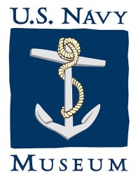

This overview is based on this XML output of the GLAMorous tool d.d. 24-01-2024.
It was generated using the GLAMorousToHTML Python script.
Also see the documentation of this tool.
Available languages
English (721)
French (145)
Spanish (92)
German (90)
Japanese (77)
Italian (62)
Russian (59)
Portuguese (57)
Polish (56)
Ukrainian (44)
Czech (40)
Chinese (37)
Arabic (34)
Hungarian (30)
Dutch (24)
Romanian (20)
Finnish (20)
Swedish (19)
Nynorsk (18)
Vietnamese (16)
Persian (15)
Hebrew (15)
Slovak (14)
Indonesian (13)
Egyptian Arabic (12)
Slovene (10)
Catalan (10)
Turkish (9)
Serbian (8)
Thai (8)
Eastern Armenian (8)
Danish (8)
Korean (7)
Bulgarian (6)
Standard Estonian (5)
Welsh (5)
Basque (4)
Uzbek (4)
Hausa (4)
Bangla (3)
Afrikaans (3)
Greek (2)
Ligurian (2)
Albanian (2)
Esperanto (2)
South Azerbaijani (2)
Burmese (2)
Irish (2)
Lithuanian (2)
Galician (2)
Central Bikol (1)
Malay (1)
Scots (1)
Azerbaijani (1)
Maltese (1)
Belarusian (1)
Malayalam (1)
Cebuano (1)
Breton (1)
West Frisian (1)
Serbo-Croatian (1)
Turkmen (1)
Sorani (1)
Malagasy (1)
Occitan (1)
Minnan (1)
Tagalog (1)
Asturian (1)
Georgian (1)
Interlingua (1)
Urdu (1)
Punjabi (1)
Tajik (1)
English (721)
14-inch gun M1907 |
1936 Republican Party presidential primaries |
1944 Great Atlantic hurricane |
1965 in the Vietnam War |
1978 Arkansas gubernatorial election |
1980 Arkansas gubernatorial election |
1982 Arkansas gubernatorial election |
1984 Arkansas gubernatorial election |
1984 Democratic Party vice presidential candidate selection |
1984 United States Senate election in Virginia |
1st Battalion, 6th Marines |
51st Division (Philippines) |
7-inch/44-caliber gun |
A7V |
Abacá |
Adolf Dehn |
Adrien Tixier |
Airborne observatory |
Aircraft recognition |
Airmanship |
Aisne-Marne American Cemetery and Memorial |
Albert M. Jones |
Alexander Vraciu |
Allan Rockwell McCann |
Allied logistics in the Southern France campaign |
Aloysius Schmitt |
American Expeditionary Force, Siberia |
American Film Manufacturing Company |
American Revolutionary War |
Amphibious assault ship |
Anatolio B. Cruz |
Andrew Carl Bennett |
Apollo 14 |
April 1970 |
Archibald Clark Kerr, 1st Baron Inverchapel |
Arleigh Burke-class destroyer |
Arthur W. Wermuth |
Atlantic Charter |
Attack on Clark Field |
Attack on Pearl Harbor |
Attack on Yokosuka |
August Maus |
Baldomero López |
Barbary Wars |
Battle of Bir Hakeim |
Battle of Borneo (1941–1942) |
Battle of Cherbourg (1864) |
Battle of Galveston |
Battle of Galveston Harbor (1862) |
Battle of Guam (1941) |
Battle of Guantánamo Bay |
Battle of Gurun |
Battle of Hong Kong |
Battle of Iwo Jima |
Battle of Jitra |
Battle of Kampar |
Battle of Kota Bharu |
Battle of Kuala Lumpur |
Battle of Mobile Bay |
Battle of Palmyra (1941) |
Battle of Port Lyautey |
Battle of Prachuap Khiri Khan |
Battle of Verdun |
Battle of Wake Island |
Berwick Bay (ship) |
Black beret |
Boeing X-20 Dyna-Soar |
Boilerplate (spaceflight) |
Bombing of Düsseldorf in World War II |
Bombing of Rangoon in World War II |
Bombing of Singapore (1941) |
Brazilian Expeditionary Force |
Brazilian battleship Minas Geraes |
Breda 20/65 mod.35 |
British E-class submarine |
British heavy tanks of the First World War |
Britt K. Slabinski |
Button |
C. R. Smith |
CFB Valcartier |
CSS A. B. Seger |
CSS Alabama |
CSS Anglo-Norman |
CSS Bienville |
CSS Bombshell |
CSS Cotton Plant |
CSS Defiance |
CSS Drewry |
CSS Gaines |
CSS General Earl Van Dorn |
CSS General Polk |
CSS General Quitman (transport) |
CSS General Rusk |
CSS George Page |
CSS Grampus |
CSS Grand Duke |
CSS Huntsville |
CSS Indian Chief |
CSS Lark |
CSS Memphis |
CSS Nashville (1853) |
CSS Phoenix |
CSS Rappahannock |
CSS Rob Roy |
CSS Savannah (ironclad) |
CSS Sea Bird |
CSS Tacony |
CSS Teaser |
CSS Webb |
CS Bayou City |
CS Neptune |
Cagliari |
Cannon 76/40 Model 1916 |
Carol McCain |
Casablanca Conference |
Casco-class monitor |
Cecil E. Harris |
Celestial navigation |
Ceremonial ship launching |
Charles Frederick Hughes |
Charles H. Corlett |
Charles Momsen |
Charles Noguès |
Chemin des Dames |
Chief of Naval Operations |
Chief of Naval Personnel |
China–Japan relations |
City-class ironclad |
Civil defense in the United States |
Clayton Barney Vogel |
Clifton Sprague |
Clyde A. Thomason |
Coast Artillery fire control system |
Commander, U.S. Pacific Fleet |
Commanders of World War II |
Continental Iron Works |
Corbin Harney |
Corydon M. Wassell |
Cuban War of Independence |
Curtiss P-40 Warhawk |
Darlene Iskra |
David R. Ray |
Dean Smith (pilot) |
Deputy Prime Minister of France |
Desert warfare |
Directorate of Music |
Doolittle Raid |
Douglas A-20 Havoc |
Earl B. Dickerson |
Early life and military career of John McCain |
Eastern Solomons order of battle |
Eclipse chasing |
Eddie Rickenbacker |
Edgar Mitchell |
Edward R. Murphy (naval officer) |
Effects of Hurricane Wilma in Florida |
Egypt–United States relations |
Eisenhower Executive Office Building |
Electoral history of Bill Clinton |
Ella Condie Lamb |
Emory S. Land |
Era No. 5 |
Ernest Bevin |
Ernest E. Evans |
Ernest J. King |
Erzherzog Karl-class battleship |
Everett Alvarez Jr. |
F-class escort ship |
February 1945 |
February 1973 |
Ferdinand Smith |
Field kitchen |
First Bombardment of Midway |
First strike (nuclear strategy) |
Fitzhugh Lee III |
Fokker E.III |
Foreign relations of Ethiopia |
Forrest S. Petersen |
Fort Wadsworth |
Frank Borman |
Frank John William Goldsmith |
Frank Knox |
Fred A. Bantz |
Fred Schmidt |
French destroyer Albatros |
French destroyer La Railleuse |
French frigate Auvergne |
French tanker Marne |
Fu-Go balloon bomb |
Garrison Norton |
Gau Düsseldorf |
Generations of warfare |
George C. Marshall |
George Whelan Anderson Jr. |
George Wythe Baylor |
German aviso Grille |
German cruiser Admiral Hipper |
German cruiser Leipzig |
German destroyer Z18 Hans Lüdemann |
German destroyer Z6 Theodor Riedel |
German fleet tender Tanga |
German submarine Deutschland |
German submarine U-175 |
German submarine U-185 |
German submarine U-336 |
Getúlio Vargas |
Gilbert Islands naval order of battle |
Glass cloth |
Governorships of Bill Clinton |
Great Rapprochement |
Greek resistance |
Grumman F6F Hellcat |
HMAS Canberra (D33) |
HMS Aboukir (1900) |
HMS Black Prince (1904) |
HMS Campania (1914) |
HMS E34 |
HMS Formidable (1898) |
HMS Kilbride |
HMS M29 |
HMS Mounsey (1915) |
HMS Pelican (1877) |
HMS Peterel (1927) |
HMS Venomous |
HMS Vindictive (1897) |
Hans Bohrdt |
Hatsuharu-class destroyer |
Havana Plan Piloto |
Hazel Scott |
Henry J. Kaiser |
Herbert A. Littleton |
Hershel W. Williams |
History of Malaysia |
History of the United States Marine Corps |
Holden C. Richardson |
Honolulu |
Howard W. Gilmore |
Humfrey Gale |
Hurricane Flora |
Hurricane Hugo |
Hurricane Jeanne |
Hurricanes in Hispaniola |
Hydrofoil |
Ian Jacob |
Imperator-class ocean liner |
Ingrid Bergman |
Injun (satellite) |
Institutum Divi Thomae |
Interlake Steamship Company |
International Ice Patrol |
J. M. Chapman |
JDS Arashio (SS-565) |
JS Hyūga |
JS Samidare |
James Forrestal |
James L. Kauffman |
Janie L. Mines |
January 2018 lunar eclipse |
Japanese aircraft carrier Ryūjō |
Japanese cruiser Sakawa |
Japanese cruiser Yūbari |
Japanese destroyer Tsuga (1920) |
Japanese invasion of Aparri |
Japanese invasion of Batan Island |
Japanese invasion of Davao |
Japanese invasion of Lamon Bay |
Japanese invasion of Legazpi |
Japanese invasion of Lingayen Gulf |
Japanese invasion of Thailand |
Japanese invasion of Vigan |
Japanese minelayer Okinoshima |
Japanese occupation of the Gilbert Islands |
Jean de Lattre de Tassigny |
Jefferson Caffery |
Jessie O. Thomas |
Jill E. Brown |
Joe DeRita |
John A. Hilger |
John D. Sloat |
John E. Kilmer |
John H. Sides |
John M. Richardson (admiral) |
John S. McCain Jr. |
John Smith (naval officer) |
John Warner |
Johnnie David Hutchins |
Josef R. Sheetz |
Joseph Hirsch |
Joshua Barney |
Judge Advocate General of the Navy |
Julian Lane Latimer |
Julius A. Furer |
Karl Meyer (aviator) |
Karl Thom |
Katie Ledecky |
Kytoon |
LZ 13 Hansa |
Lady Franklin Bay Expedition |
Landings on Rendova |
Leadership of the United States Indo-Pacific Command |
Leon Smith (naval commander) |
Liberation of France |
Liberation of Paris |
Liberty ship |
Lighter aboard ship |
Lissie, Texas |
List of Chicago alderpersons since 1923 |
List of Congressional Gold Medal recipients |
List of Knight's Cross of the Iron Cross recipients (M) |
List of Kriegsmarine ships |
List of Medal of Honor recipients for World War II |
List of Medal of Honor recipients for the Vietnam War |
List of Polish inventors and discoverers |
List of Schütte-Lanz airships |
List of U.S. governors of the Ryukyu Islands |
List of United States Navy four-star admirals |
List of United States Navy vice admirals on active duty before 1960 |
List of World War I memorials and cemeteries in Flanders |
List of active United States naval aircraft |
List of ambassadors of the United States to Portugal |
List of auxiliaries of the United States Navy |
List of combat vehicles of World War I |
List of diplomatic visits to the United States: Asia |
List of equipment of the United States Armed Forces |
List of former equipment of the Finnish Army |
List of former equipment of the New Zealand Army |
List of governors of Arkansas |
List of governors of California before 1850 |
List of museum ships in North America |
List of presidential trips made by Barack Obama (2016–2017) |
List of sea captains |
List of ships of the Confederate States Navy |
List of ships of the Soviet Navy |
List of shipwrecks in August 1943 |
List of submarine classes of the United States Navy |
List of tinclad warships of the Union Navy |
Lloyd M. Bucher |
Lost Horizon |
Louis Jacquinot |
Louis Van Iersel |
Louisiana Creole people |
M1917 Browning machine gun |
MS Schwabenland (1925) |
MV Cape Horn (T-AKR-5068) |
Malayan campaign |
Manila Railroad 300 class |
Margaret Chung |
Marie-Pierre Kœnig |
Marine Detachment, Air Warning Service, Philippines (1941-42) |
Marius Boyer |
Mark 38 25 mm machine gun system |
Marlin Firearms |
Martin PBM Mariner |
Mary Josephine Shelly |
Mashouda |
Matthew Ridgway |
May 1926 |
McDonnell F2H Banshee |
Messerschmitt M 18 |
Mexican Revolution |
Miantonomoh-class monitor |
Mighty Servant 2 |
Mildred H. McAfee |
Military beret |
Milwaukee-class monitor |
Minerva Armored Car |
Mississippi River Squadron |
Mobile User Objective System |
Monticello (privateer) |
Monument to the Victims of the USS Maine (Havana) |
Mortaio da 210/8 D.S. |
Moscow Conference (1942) |
Natal, Rio Grande do Norte |
National League for Women's Service |
National War Labor Board (1942–1945) |
Naval Aircraft Factory |
Naval Base Gilbert Islands |
Naval Base Hawaii |
Naval Base Iwo Jima |
Naval Base Tarawa |
Naval Battle of Casablanca |
Navigator |
Nebraska Admiral |
New York Central Tugboat 13 |
Norfolk Naval Shipyard |
Norman Wilkinson (artist) |
November 1974 |
Nuclear weapon |
Nuclear weapons testing |
Olivia de Havilland |
Operation Cottage |
Operation Dervish (1941) |
Operation Formation Star |
Operation Gauntlet |
Operation Long Jump |
Operation Magic Carpet |
Operation Torch |
Pappy Boyington |
Patrick Space Force Base |
Paul Poberezny |
Pearl Harbor Naval Shipyard |
Perak |
Perceptron |
Percy Wright Foote |
Persian Corridor |
Personal flotation device |
Philippe Pétain |
Philippine Constabulary |
Philippines campaign (1941–1942) |
Pioneer (submarine) |
Pivot gun |
Poon Lim |
Potenji River Conference |
Presidency of Chester A. Arthur |
Presidency of Eurico Gaspar Dutra |
Prisoner of war |
Psychological Warfare Division |
Puget Sound Naval Shipyard |
REMUS (vehicle) |
RMS Majestic (1914) |
ROKS Gang Gam-chan (DDH-979) |
ROKS Gwanggaeto the Great |
ROKS Seoae Ryu Seong-ryong (DDG-993) |
ROKS Yulgok Yi I (DDG-992) |
R boat |
Railway gun |
Ralph G. Martin |
Ramsund, Norway |
Raymond A. Spruance |
Revolt of the Admirals |
Richard Dale |
Riftia |
Robert A. Barth |
Robert E. Clay |
Robert E. Gross (businessman) |
Robert L. Ghormley |
Robert Mallory Berry |
Robert Morris (financier) |
Russell Willson |
SCR-268 radar |
SM-65D Atlas |
SMS Frankfurt |
SMS G196 |
SMS Vulkan |
SMS Árpád |
SM U-111 |
SM U-20 (Germany) |
SM U-9 |
SM UC-56 |
SOLRAD 4 |
SOMUA S35 |
SS Huntsend |
SS Kronprinz Wilhelm |
SS Manchuria (1903) |
SS Patrick Henry |
SS Pisa (1896) |
SS Robert Rowan |
SS Roosevelt (1905) |
SS Vaterland (1913) |
SS Virginia Dare |
Safeguard-class rescue and salvage ship |
Sailor tattoos |
Saint John's Island |
Salvage diving |
Searchlight |
Shackleton Glacier |
Shanghai International Settlement |
Shelling of Johnston and Palmyra |
Ship sponsor |
Show of force |
Siddeley-Deasy |
Siege of Port Hudson |
Sikhism in Cyprus |
Simon Bolivar Buckner Jr. |
Simone Biles |
Sinking of Prince of Wales and Repulse |
Sinking of the RMS Lusitania |
Sinpo |
Somerville Pinkney Tuck |
Sopwith Tabloid |
Soviet cruiser Aleksandr Suvorov |
Soviet cruiser Molotovsk |
Soviet cruiser Vladivostok |
Soviet destroyer Boyky (1959) |
Soviet destroyer Derzky (1960) |
Soviet destroyer Gordy (1960) |
Soviet destroyer Neuderzhimy |
Soviet destroyer Zhguchy (1959) |
Soviet submarine tender Magadansky Komsomolets |
Special Service Squadron |
St. Mihiel American Cemetery and Memorial |
Steinke hood |
Stielhandgranate |
Submarine |
Supercavitating propeller |
Suresnes American Cemetery and Memorial |
Surgeon General of the United States Navy |
Svalbard |
Tactical emergency medical services |
Tappan (brand) |
Technology during World War I |
The Big Picture (American TV series) |
Theodore Roosevelt |
Thomas C. Hart |
Thomas Kemp (shipbuilder) |
Thomas Monroe Campbell |
Timberclad warship |
Timeline of Coimbatore |
Timeline of Philippine history |
Timm N2T Tutor |
Tomb of the Unknown Soldier (Arlington) |
Transit (satellite) |
Tranvía |
Trident (missile) |
Troop engagements of the American Civil War, 1863 |
Type 10 and Type 3 rocket boosters |
Type 1936A destroyer |
Type 93 heavy machine gun |
Type 97 Chi-Ha medium tank |
Typewriter |
USCGC Eastwind |
USCGC Laurel |
USCGC Northwind (WAGB-282) |
USCGC Spencer (WPG-36) |
USNS Mizar |
USRC Harriet Lane |
USS Advocate (1861) |
USS Agawam (1863) |
USS Alexandria (1862) |
USS Alliance (1778) |
USS Aquila (PHM-4) |
USS Arapahoe (1864) |
USS Atlanta (1884) |
USS Bagley (DD-386) |
USS Beatty (DD-640) |
USS Belleau Wood (CVL-24) |
USS Benjamin Stoddert |
USS Blandy |
USS Boston (1884) |
USS Briscoe (DD-977) |
USS Caron |
USS Charger |
USS Chicago (1885) |
USS Clemson (DD-186) |
USS Cochrane |
USS Collier |
USS Commodore McDonough |
USS Conolly |
USS Contoocook (1864) |
USS Courtenay P |
USS Cushing (DD-985) |
USS Daffodil |
USS David R. Ray |
USS Denver (CL-58) |
USS Deyo |
USS Dictator |
USS Dolphin (PG-24) |
USS Emerald (1864) |
USS Emily |
USS Enterprise (CV-6) |
USS Enterprise (CVN-65) |
USS Enterprise (CVN-80) |
USS Essex (1856) |
USS Fairplay |
USS Flag |
USS Flusser (1864) |
USS Forrestal |
USS Freedom (LCS-1) |
USS George Washington (CVN-73) |
USS Glacier (AGB-4) |
USS Glide (1863) |
USS Grampus (1863) |
USS Gray |
USS Harry W. Hill |
USS Hayler |
USS Hepburn |
USS Hero (1861) |
USS Heywood L. Edwards |
USS Hornet (1865) |
USS Hyacinth (1862) |
USS Ibex (1863) |
USS Indiana (BB-1) |
USS Ingersoll (DD-990) |
USS Iowa (BB-4) |
USS John Hancock (DD-981) |
USS John Young |
USS Kearsarge (1861) |
USS Kenwood (1863) |
USS LST-287 |
USS LST-543 |
USS Lafayette (1848) |
USS Lawrence (DDG-4) |
USS Leftwich |
USS Leonard F. Mason |
USS Macedonian (1836) |
USS Mackinaw |
USS Maine (1889) |
USS Marmora (1862) |
USS Maryland (BB-46) |
USS Mayflower (PY-1) |
USS Memphis (CL-13) |
USS Merrill (DD-976) |
USS Meteor (1819) |
USS Miller (FF-1091) |
USS Missouri (BB-11) |
USS Missouri (BB-63) |
USS Monadnock (1863) |
USS Muscoota |
USS Nahant (1862) |
USS Nathaniel Taylor |
USS Nausett (1865) |
USS New England (1861) |
USS New Orleans (LPH-11) |
USS New York (BB-34) |
USS Nicholson (DD-982) |
USS Nimitz |
USS Noble (1861) |
USS O'Brien (DD-975) |
USS Oklahoma (BB-37) |
USS Oldendorf |
USS Olympia (C-6) |
USS Oriole (1864) |
USS Ouellet |
USS Passaic (1862) |
USS Pawtuxet |
USS Pennsylvania (1837) |
USS Pequot (1863) |
USS Peri |
USS Peterson (DD-969) |
USS Petrel (1862) |
USS Phoenix (1861) |
USS Potomac (1861) |
USS Pueblo (AGER-2) |
USS Rafael Peralta |
USS Ralph Johnson |
USS Renshaw (1862) |
USS Richard Vaux |
USS Robin Hood |
USS Romeo |
USS Salvager |
USS San Francisco (C-5) |
USS Sassacus (1862) |
USS Seawolf (SSN-21) |
USS Signal (1862) |
USS Sitkoh Bay |
USS Snowdrop (1863) |
USS South America |
USS Southerner |
USS Spruance (DD-963) |
USS Stephen Young |
USS Stump |
USS Syren (1803) |
USS Tensas |
USS Texas (CGN-39) |
USS Thorn (DD-988) |
USS Tillman (DD-641) |
USS Timor |
USS Towers |
USS Truxtun (DDG-103) |
USS Vesuvius (1888) |
USS Virginia (CGN-38) |
USS W. L. Bartlett |
USS W. W. Burns |
USS Wabash (1855) |
USS Wadsworth (DD-60) |
USS Wake |
USS Washington (BB-56) |
USS Watauga |
USS Weight |
USS Wichita (LCS-13) |
USS Winooski (1863) |
USS Wyandotte (1864) |
USS Yancey |
USS Yorktown (PG-1) |
USS Zumwalt |
US Naval Bases North Africa |
Underwater Demolition Team |
Unified Task Force |
United States Indo-Pacific Command |
United States Naval Forces Europe and Africa |
United States Navy SEALs |
United States involvement in the Mexican Revolution |
United States labor law |
United States military beret flash |
United States occupation of Veracruz |
Universal Carrier |
VAQ-136 |
VF-18 |
VMA-236 |
VMFA-122 |
VP-8 |
VS-29 |
Veracruz (city) |
Vivian Dykes |
W. John Kenney |
Wally Schirra |
Wesley A. Brown |
Western Military Academy |
Willi Geiger (painter) |
William D. Leahy |
William E. Chandler |
William E. Hall |
William H. Wilbur |
William Harrison Standley |
William Lamb (Confederate States Army officer) |
William Longshaw Jr. |
William R. Kane |
William Russel Huber |
Willy Stöwer |
Wilson D. Watson |
Winnie Gibson |
Wooden boats of World War II |
World War II by country |
World War I prisoners of war in Germany |
Wright Brothers Memorial Trophy |
XAF radar |
Yokosuka Naval District |
Yorktown-class aircraft carrier |
Yorktown-class gunboat |
Zeppelin P Class |
Zumwalt-class destroyer
French (145)
12e régiment de chasseurs d'Afrique |
1914 en Belgique |
1942 |
1944 en France |
21e compagnie nord-africaine |
28-cm-Kanone 5 (E) |
290e régiment d'artillerie |
4e régiment de chasseurs d'Afrique |
4e régiment de dragons (France) |
Adrien Tixier |
Aichi E13A |
Albatros (contre-torpilleur) |
Aloysius Schmitt |
Apollo 11 |
Applied Physics Laboratory |
Armée d'armistice |
Arsenal naval de Yokosuka |
Attaque de Yokosuka |
Automitrailleuse Minerva |
Avenue Mohammed-V (Tunis) |
Aérophone (militaire) |
Base navale de Yokosuka |
Bataille de Balikpapan (1942) |
Bataille de Cantigny |
Bataille de Mobile Bay |
Bataille de Port Lyautey |
Bataille navale de Casablanca |
Bataillon de marche n° 13 |
Bill Clinton |
Breda Modèle 1935 |
Butte de Montsec |
CSS H. L. Hunley |
CSS Rappahannock |
Caméra Éclair 16 |
Canon 76/40 Modèle 1916 |
Canon de 65 mm de montagne modèle 1906 |
Canons transmanches durant la Seconde Guerre mondiale |
Cathédrale Notre-Dame de Reims |
Cavalerie française pendant la Seconde Guerre mondiale |
Cecil E. Harris |
Chance Vought F4U Corsair |
Charles Conrad |
Chronologie des faits économiques et sociaux dans les années 1940 |
Château (bateau) |
Classe Baltimore |
Classe City (navire cuirassé) |
Classe Colombo |
Classe Forrestal |
Classe Milwaukee |
Classe Reine |
Clifton Sprague |
Commandement en chef français civil et militaire |
David Scott |
Dirigeable Goodyear |
District naval de Yokosuka |
Dobuita |
Déclaration de Moscou |
Démonstration de force |
Flotte de porte-avions de l'US Navy |
Frank Borman |
Front austro-serbe (Première Guerre mondiale) |
Gaston Boucart |
Georges Mirianon |
Getúlio Vargas |
Gondrecourt-le-Château |
Gouvernement Charles de Gaulle (1) |
Gouvernement Charles de Gaulle (2) |
Gouvernement Joseph Laniel (1) |
Gouvernement Joseph Laniel (2) |
Gyula Andrássy le Jeune |
HMS Terrible (1895) |
HSC-11 |
Helicopter 66 |
Henri Giraud (militaire) |
Hôtel Marriott Mena House |
Jefferson Caffery |
Jill E. Brown |
Juvigny (Aisne) |
Karl Tersztyánszky von Nádas |
Kōtetsu |
La Paix des dupes |
Laffly 80 AM |
Les Secrets de la mer Noire |
Liste des casques de l'armée française |
Liste des chefs du gouvernement français |
Liste des classes de sous-marins de l'United States Navy |
Liste des ministres français de l'Intérieur |
Liste des ministres français de l'Économie et des Finances |
Léonard Bordes |
Majestic (paquebot de 1922) |
Marine austro-hongroise |
Mission Viviani-Joffre |
Naval Air Station Key West |
Naval Monument de Brest |
Navire ravitailleur |
Neil Armstrong Air and Space Museum |
Opération Blackstone |
Opération Brushwood |
Opération Husky |
Opération Magic Carpet |
Ouragan Bertha (1996) |
Ouragan Ivan |
Petit-Trou-de-Nippes |
Petit-bois |
Phare Triton |
Port de Bordeaux |
REMUS |
ROKS Gang Gam-chan |
Radar CXAM |
Raid de Doolittle |
Rue Charles-Graindorge |
Régime de Vichy |
SCR-268 |
SMS Árpád |
SOLRAD |
SS Kronprinz Wilhelm |
SS Leviathan |
Seconde bataille de Galveston |
Skyline de New York |
Sopwith Tabloid |
Thomas Stafford |
Trieste II (bathyscaphe) |
Typhus |
USS Aries (PHM-5) |
USS Clemson (DD-186) |
USS Colorado (BB-45) |
USS Leary (DD-158) |
USS Marmora (1862) |
USS Scorpion (SS-278) |
USS Washington (BB-56) |
Unterseeboot 175 |
Unterseeboot 185 |
Unterseeboot 336 |
Unterseeboot 801 |
Unterseeboot UC-56 |
VAQ-136 |
VMA-214 |
VMFA-122 |
VMU-2 |
VMU-3 |
Varsovie |
William Leahy |
William Longshaw Jr. |
Zones sensibles |
Église Saint-Germain de Mareuil-en-Dôle
Spanish (92)
1929 |
Academia Naval de los Estados Unidos |
Akikaze |
Alexander Vraciu |
Ametralladora pesada Tipo 93 |
Apolo 14 |
Arma nuclear |
Atentado del bar Iruña |
Batalla de Galveston |
Bomba globo Fu-Go |
Botes salvavidas del RMS Titanic |
Brasil en la Segunda Guerra Mundial |
Buque de asalto anfibio |
CSS Florida (1862) |
CSS Georgia (1862) |
CSS Harriet Lane |
CSS Ida |
CSS Rappahannock |
CSS Saint Mary |
Canadá en la Segunda Guerra Mundial |
Charles Noguès |
Clase Arleigh Burke |
Clase Imperator |
Clase Zumwalt |
Curtiss P-40 Warhawk |
Dique de Gamazo |
Elecciones presidenciales de Estados Unidos de 1936 |
Elecciones presidenciales de Estados Unidos de 1940 |
España en la Primera Guerra Mundial |
Fuerte de Mazalquivir |
Fuerza Expedicionaria Estadounidense en Siberia |
Gran Flota Blanca |
Gregory "Pappy" Boyington |
Guerra antisubmarina |
HMAS Canberra (D33) |
Henry Fonda |
Henry John Kaiser |
Hidroala |
Historia de Cantabria |
Honolulu |
Hundimiento del RMS Titanic |
Ilustre Instituto Veracruzano |
Impacto ambiental de la guerra |
Incursión Doolittle |
Iósif Stalin |
Jefferson Caffery |
Jun'yō |
Kotetsu (1869) |
Mar Cantábrico |
Margaret Chung |
Marlin Firearms |
Mary Josephine Shelly |
Numancia (F-83) |
Ochenio de Manuel Odría |
Orán |
Paul Poberezny |
RMS Majestic (1914) |
RMS Titanic |
Resistencia griega |
SEAL |
SMS Vulkan |
SS Leviathan |
Screw steamer (vapor con hélice) |
Selma Burke |
Siddeley-Deasy |
Submarino U-185 |
Tecnología durante la Primera Guerra Mundial |
Theodore Roosevelt |
Trident (misil) |
USS Alexandria |
USS Commodore Perry |
USS Cook (DE-1083) |
USS Enterprise (CVN-80) |
USS Eolus (1864) |
USS Farragut (DDG-99) |
USS Florida (BB-30) |
USS Hué City (CG-66) |
USS Illinois (BB-7) |
USS John P. Murtha (LPD-26) |
USS John Young (DD-973) |
USS Lexington (1861) |
USS Maine (ACR-1) |
USS Michigan (BB-27) |
USS Missouri (BB-11) |
USS Nautilus (SS-168) |
USS New York (BB-34) |
USS Rafael Peralta (DDG-115) |
USS Shoup (DDG-86) |
USS Truxtun (DDG-103) |
USS Wyoming (BB-32) |
USS Zumwalt (DDG-1000) |
Willy Stöwer
German (90)
12-cm-Feldhaubitze 1912/39 L14 |
A7V |
Aegis-Kampfsystem |
Albatros (Schiff, 1931) |
Atombombenabwürfe auf Hiroshima und Nagasaki |
August Maus |
Bauliste der Chantiers de l’Atlantique |
Blue Angels |
Casablanca-Konferenz |
Chief of Naval Operations |
Colorado-Klasse |
Companhia de Navegação Carregadores Açorianos |
David M. Shoup |
Deutsche Verkehrsflug |
Donald Bradford Beary |
Enterprise (Schiff, 1799) |
Ernest J. King |
Felix Schwormstädt |
Flottenbegleiter |
Forrestal-Klasse |
Fred Schmidt (Schwimmer) |
Geschichte Maltas |
Geschichte der Stadt Düsseldorf |
Grabeskirche |
Hans Rudolf Schulze |
Harry Hopkins |
Heiyo Maru |
Hiyō-Klasse |
Jacques Piccard |
Japanische Invasion von Tulagi |
Japanische Militärfahrzeuge des Zweiten Weltkrieges |
Karl Goetz (Medailleur) |
Karl Thom (Flieger) |
Konferenz von Moskau |
Konrad von Henkel-Gebhardi |
Kriegsgefangene des Zweiten Weltkrieges |
Laffly |
Liste britischer Starrluftschiffe |
Liste der Botschafter der Vereinigten Staaten in Russland |
Liste der Einheitslinienschiffe |
Liste der Großkampfschiffe |
Liste der Monuments historiques in Romagne-sous-Montfaucon |
Liste der National Historic Landmarks im District of Columbia |
Liste der Panzerschiffe |
Liste deutscher Jagdflieger im Ersten Weltkrieg |
Liste von Artillerie gemäß den Kennblättern fremden Geräts D 50/4 und D50/5 und D 50/6 |
Liste von Trägern des Goldenen Militär-Verdienst-Kreuzes |
Lockheed Martin F-35 |
Louis E. Denfeld |
Luftangriffe auf Düsseldorf |
Lusitania-Medaille |
Majestic (Schiff, 1922) |
Margaret Chung |
Milan (Schiff, 1934) |
Mizuhō (Schiff, 1939) |
Mobile (Alabama) |
Olga (Schiff, 1882) |
Olivia de Havilland |
Operation Cottage |
Operation Magic Carpet (Zweiter Weltkrieg) |
Operation SE |
Paul Howard Poberezny |
Pegasus-Klasse (1973) |
Ralph G. Martin |
Randolph Scott |
Rettungskorb |
Rouen |
Ryūhō |
Ryūjō (Schiff, 1933) |
Schlacht bei den Ost-Salomonen |
Schnellbootflottille |
Schwalbennest (Schiffbau) |
See- und Luftschlacht im Golf von Leyte (Flottenaufstellung) |
Show of Force |
US-amerikanische Flugzeuge im Zweiten Weltkrieg |
USS California (BB-44) |
USS Jacob Jones (DD-130) |
USS John S. McCain (DDG-56) |
USS O’Bannon (DD-987) |
USS Thorn (DD-988) |
U 175 |
U 185 |
U 664 |
United States Asiatic Fleet |
Unryū-Klasse |
Vulkan (Schiff, 1908) |
War Production Board |
William Harrison Standley |
Z 18 Hans Lüdemann |
Ægir (Schiff, 1939)
Japanese (77)
F-35 (戦闘機) |
F6F (航空機) |
K級軟式飛行船 |
SB2U (航空機) |
さみだれ (護衛艦) |
アイオワ級戦艦 |
アッツ島の戦い |
アメリカ欧州海軍 |
アーサー・ワーマス |
ウェルドック |
エアマンシップ |
エセックス級航空母艦 |
カサブランカ会談 |
キャンプ・デービッド |
キャンベラ (ケント級重巡洋艦) |
ショー (DD-373) |
ジョセフ・R・シーツ |
ジョン・ジェリコー (初代ジェリコー伯爵) |
スタンキー・フード |
スヴァールバル諸島 |
ズムウォルト級ミサイル駆逐艦 |
セオドア・ルーズベルト (空母) |
セント・ロー (護衛空母) |
ダグラス・マッカーサー |
トーマス・C・ハート |
ドイツ海軍 (国防軍) |
ドーリットル空襲 |
ノルマンディー上陸作戦 |
バドル作戦 (第四次中東戦争) |
パンアメリカン航空 |
ピッグポイントの戦い |
フォレスタル (空母) |
フォレスタル級航空母艦 |
ブローニングM1919重機関銃 |
ヘイウッド・L・エドワーズ (駆逐艦) |
ペンシルベニア (戦列艦) |
ラファエル・ペラルタ (ミサイル駆逐艦) |
ラフリー (自動車メーカー) |
ル・テリブル (大型駆逐艦) |
ル・ファンタスク (大型駆逐艦) |
ワスプ (CV-18) |
乗り物に関する世界一の一覧 |
制帽 |
十日市町停留場 |
原爆十景 |
周至柔 |
大正橋 (広島市) |
山陽丸 (特設水上機母艦) |
希望回復作戦 |
広島原爆で被爆した東南アジア人 |
広島市役所 |
建艦競争 |
揚陸艦 |
救命胴衣 |
望遠鏡 |
朝鮮戦争 |
横須賀空襲 |
海上自衛隊の航空母艦建造構想 |
潜水艦 |
琉球列島米国軍政府 |
環太平洋合同演習 |
真珠湾攻撃 |
硫黄島の戦い |
第14ヘリコプター機雷掃海飛行隊 (アメリカ海軍) |
第7艦隊 (アメリカ軍) |
第一次ソロモン海戦 |
第二次世界大戦 |
索発射銃 |
統合基本航空機訓練システム計画 |
義和団の乱 |
超大型空母 |
軍事的示威活動 |
軍事顧問 |
軍服 (中華民国) |
進水式 |
重機関銃 |
風船爆弾
Italian (62)
A7V |
AMD Laffly 80 |
Aeroporto di Pontedera |
Affondamento del Lusitania |
Albatros (cacciatorpediniere) |
Apollo 14 |
Bagnoli (Napoli) |
Battaglia del Golfo di Biscaglia |
Battaglia del Golfo di Kula |
Battaglia di Fort Sumter |
Battaglia di Galveston |
Battaglia di Galveston Harbor |
Bombardamenti di Palermo nella seconda guerra mondiale |
Campagna delle isole Salomone |
Capo delle Operazioni Navali |
Carri armati britannici della prima guerra mondiale |
Charles Noguès |
Chester Nimitz |
Classe Asashio (cacciatorpediniere) |
Classe Goliat |
Classe Kil |
Classe Kirov (incrociatore 1980) |
Classe New Mexico |
Classe Wyoming |
Conflitto della zona demilitarizzata coreana |
Donald Clark Godwin |
Flottenbegleiter |
Franklin Delano Roosevelt |
François de Geoffre |
George Whelan Anderson Jr. |
Giovanni Battista Antonelli (1527-1588) |
Governo di Vichy |
Guerra d'indipendenza cubana |
Liberazione di Parigi |
Lothar von Arnauld de la Perière |
MG 08 |
Mario Luciolli |
Mena Jabal Ali |
Operazione Magic Carpet |
Pearl Harbor |
Presidenza di Franklin Delano Roosevelt |
Prigioniero di guerra |
R-Boot |
Senatori del Connecticut |
Spagna nella prima guerra mondiale |
Storia contemporanea |
Storia di Pontedera |
Storia di Siracusa in epoca contemporanea |
Svolgimento della guerra di secessione americana |
Tanikaze |
Tatuaggio marinaresco |
Terremoto di Messina del 1908 |
Thomas C. Hart |
USS Arkansas (BB-33) |
USS Gearing |
USS Maine (ACR-1) |
USS Wichita (LCS-13) |
USS Wyoming (BB-32) |
Unione Sovietica nella seconda guerra mondiale |
United States Naval Academy |
Willy Stöwer |
Yugumo
Russian (59)
25-мм артиллерийская установка Mark 38 |
F-35 |
General Dynamics-Grumman F-111B |
HMS Pelican (1877) |
U-175 |
U-185 |
U-336 |
U-801 |
USS Dictator (1863) |
USS Enterprise (CVN-80) |
White AM (бронеавтомобиль) |
Авианосцы типа «Форрестол» |
Архангельск (порт) |
Аэрозольное пожаротушение |
Бартлетт, Роберт |
Беспилотный летательный аппарат |
Бой у Куантана |
Военная история Франции |
Военно-морская академия США |
Военно-морской флот |
Генеральное консульство США во Владивостоке |
Ден, Адольф |
Дёниц, Карл |
Жгучий (эсминец) |
Йорктаунская кампания |
Капюшон Штайнке |
Маус, Август |
Мексиканская кампания Скотта |
Миноносцы типа 1923 |
Миноносцы типа 1935 |
Миноносцы типа G-192 |
Мониторы типа «Миантономо» |
Мониторы типа «Милуоки» |
Нападение на Перл-Харбор |
Неудержимый (эсминец) |
Ногес, Шарль |
Ослепляющий камуфляж |
Петен, Филипп |
Пишущая машинка |
Повреждения кораблей в результате нападения на Перл-Харбор |
Рейхспрезидент |
Ричардсон, Джон (адмирал) |
Рузвельт (шхуна) |
Саки (аэродром) |
Свободные французские силы |
Сидушка |
Сицилийская операция |
Слабински, Бритт |
Советская Антарктическая экспедиция |
Список бронетехники периода Первой мировой войны |
Список вертолётов (A-Z) |
Список самолётов (C-D) |
Список самолётов (E-H) |
Список участников Вьетнамской войны, награждённых медалью Почёта |
Судно на подводных крыльях |
Тяжёлые крейсера типа «Кент» |
Участие США в Мексиканской революции |
Франция во Второй мировой войне |
Французский экспедиционный корпус в Америке
Portuguese (57)
Akagi (porta-aviões) |
Apollo 12 |
Apollo 14 |
Camp David |
Canadá na Segunda Guerra Mundial |
Classe Forrestal |
Classe North Carolina |
Classe Zumwalt |
Conferência de Moscou |
Conferência do Potengi |
Declaração de Moscou |
Don Walsh |
Espanha na Primeira Guerra Mundial |
Fokker E.III |
Força de Defesa do Barém |
Furacão Flora |
George W. Anderson |
Governo Eurico Gaspar Dutra |
HMS Renown (72) |
Honolulu |
Invasão da Polônia |
Jefferson Caffery |
Karl Thom |
Leipzig (cruzador) |
Lista de conferências da Segunda Guerra Mundial |
Lista de couraçados dos Estados Unidos |
Lista de submarinos por país |
Minas Geraes (couraçado) |
Natal (Rio Grande do Norte) |
Olivia de Havilland |
Operação Cottage |
RMS Lusitania |
RMS Majestic (1914) |
Rio Grande do Norte |
SMS Árpád |
Segunda Guerra Mundial |
Somua S-35 |
Submarino |
Sílvio de Noronha |
Turbina a gás |
Túmulo do Soldado Desconhecido (Arlington) |
U-185 |
USS Connecticut (BB-18) |
USS Indiana (BB-1) |
USS Iowa (BB-4) |
USS Maine (ACR-1) |
USS Maryland (BB-46) |
USS Missouri (BB-11) |
USS Missouri (BB-63) |
USS New Mexico (BB-40) |
USS North Dakota (BB-29) |
USS Tennessee (BB-43) |
USS Washington (BB-56) |
United States Navy SEALs |
Universal Carrier |
WAVES |
Walter Schirra
Polish (56)
Andrew Carl Bennett |
August Maus |
Bitwa o Bir Hakeim |
Bitwa pod Midway |
Bomba balonowa fu-go |
CSS Rappahannock |
Curtiss SO3C Seamew |
Douglas A2D Skyshark |
Douglas SBD Dauntless |
Działo |
Działo 406 mm L/50 Mark 7 |
Działo okrętowe |
Emden (1925) |
Francuski ruch oporu |
Grumman F4F Wildcat |
Gubernatorzy Arkansas |
II wojna światowa |
Ingrid Bergman |
Karabin maszynowy |
Karabin maszynowy MG 08/15 |
Kościół Świętych Apostołów Piotra i Pawła w Suwałkach |
Krążowniki rakietowe projektu 1134 |
Leipzig (1929) |
Lekki karabin maszynowy |
Nathan Twining |
Niemieckie okręty podwodne |
Nürnberg (1934) |
Okręty desantowe projektu 1171 |
Operacja Magic Carpet (1945) |
Pancerniki typu North Carolina |
Poon Lim |
Rajd Doolittle’a |
SMS G 196 |
SMS Árpád |
SM UC-56 |
SSM-N-8 Regulus I |
Torpeda Typ 93 |
Torpedowce typu 1923 |
U-175 (1941) |
U-185 (1942) |
U-551 |
U-801 |
U-84 (1941) |
USS Buchanan (DD-131) |
USS Chicago (1885) |
USS Dwight D. Eisenhower (CVN-69) |
USS Hornet (CV-8) |
USS Kraken (SS-370) |
USS Maryland (BB-46) |
USS Monitor |
USS Ouellet (FF-1077) |
USS Yorktown (CV-5) |
Wodolot |
Wojna chińsko-japońska (1937–1945) |
Władiwostok (1966) |
Zengen-sakusen
Ukrainian (44)
301-ша піхотна дивізія (Третій Рейх) |
76-мм корабельна гармата OTO Melara |
Sidi-Ferruch (Q181) |
U-175 |
U-185 |
U-336 |
USS Dictator (1863) |
USS Lafayette (1848) |
USS Maine (ACR-1) |
USS Rafael Peralta (DDG-115) |
USS Sterett (DDG-104) |
Z18 Hans Lüdemann |
Історія Малайзії |
Август Маус |
Авіаційна астрономія |
Берберська работоргівля |
Битва за Джелу |
Військово-морська академія США |
Дон Волш |
Каміль Шамун |
Коронна колонія Мальта |
Кіннота в Першій світовій війні |
Мальта |
Норфолкська військово-морська верф |
Об'єднана військова база Перл-Гарбор-Гіккам |
Окіносіма (загороджувач) |
Операція «Гонтлет» |
Перл-Гарбор (військово-морська база) |
Пол Побережний |
Рейд Дуліттла |
Роберт Бартлетт |
Річкова ескадра Міссісіпі |
Річкові монітори типу «Каско» |
Річкові монітори типу «Мілвокі» |
Сакава (крейсер) |
Сан-Дієго (військово-морська база) |
Складане крило |
Список військових літаків США |
Список військових літаків США, що перебувають на службі |
Список лінійних кораблів Великої Британії |
Список найбільших суден та кораблів потоплених U-Boot |
Стратегічні бомбардування під час Першої світової війни |
Франція в Другій світовій війні |
Хронологія битви за Атлантику (1939—1945)
Czech (40)
AGM-154 Joint Standoff Weapon |
Bitva u Midwaye |
Júbari (1923) |
Krym |
Letecký souboj nad Boskovštejnem |
Margaret Brownová |
Mizuho (1938) |
New York Shipbuilding Corporation |
Námořní akademie Spojených států amerických |
Pařížské povstání |
SMS G 96 |
SMS Árpád |
Seznam německých torpédoborců |
Torpédovka typu 1935 |
Třída Abercrombie |
Třída Aigle |
Třída Benham |
Třída Birmingham |
Třída Deutschland |
Třída Drake |
Třída F (1935) |
Třída Freedom (2006) |
Třída G 192 |
Třída Liberty |
Třída Marshal Ney |
Třída Monarch |
Třída Powerful |
Třída Raubvogel |
Třída Reine |
USS California (BB-44) |
USS Constitution |
USS Illinois (BB-7) |
USS Mississippi (CGN-40) |
USS Missouri (BB-11) |
USS North Dakota (BB-29) |
USS Texas (CGN-39) |
USS The Sullivans (DDG-68) |
USS Virginia (CGN-38) |
USS Wisconsin (BB-9) |
William Cramp & Sons
Chinese (37)
F-35閃電II戰鬥機 |
S艇 |
U-111号潜艇 (1917年) |
U-9号潜艇 (1910年) |
UC-56号潜艇 |
UGM-27北极星导弹 |
Z-6特奥多尔·里德尔号驱逐舰 |
中海號戰車登陸艦 |
中途岛海战 |
保障級救援打撈船 |
克利夫頓·斯普拉格 |
十日市町停留場 |
可怖號驅逐艦 |
台灣戰俘營 |
坦噶號魚雷艇母艦 |
好人理查號 |
巨型管蟲 |
恢复希望行动 |
斯普魯恩斯號驅逐艦 (DD-963) |
新费多里夫卡机场 |
水翼船 |
沈崇案 |
潜艇母舰 |
第一次世界大戰期間技術 |
第三次长沙会战 |
約翰斯頓號驅逐艦 (DD-557) |
纳塔尔会议 |
纽约 |
美國海軍艦艇列表 |
菲利普·贝当 |
道格拉斯·麦克阿瑟 |
重庆大轰炸 |
鍾雲 |
阿波罗14号 |
青岛太平路小学 |
馬利蘭號戰艦 |
齊柏林飛船P級
Arabic (34)
أسير |
ألويسيوس شميت |
أندرو كارل بينيت |
إرنست كينغ |
إسبانيا في الحرب العالمية الأولى |
إعلان موسكو |
إيرل بي. ديكرسون |
احتلال الولايات المتحدة لفيراكروز |
الألغام في ليبيا |
التقارب العظيم |
الغواصة الألمانية يو-175 |
الغواصة الألمانية يو-185 |
الغواصة الألمانية يو-336 |
الغواصة الألمانية يو-664 |
الغواصة الألمانية يو-801 |
جايني إل. ماينز |
جوزيف هيرش |
جون إم. ريتشاردسون |
جيفرسون كافيري |
ديفيد ر. راي |
رالف جي. مارتن |
سفينة مرافقة الفئة اف |
غارة دوليتل |
غواصة يو-111 |
غواصة يو سي-56 |
قوة المشاة الأمريكية، سيبيريا |
كارل ثوم |
كليفتون سبراغ |
مخرطة |
معركة إيو جيما |
معركة بورت ليوتي |
هولدن س. ريتشاردسون |
يو إس إس بويبلو |
يوم المدافع عن أرض الآباء
Hungarian (30)
1914. szeptember 22-ei ütközet |
Alan Bean |
Buzz Aldrin |
Deutschland (tengeralattjáró) |
Edgar Mitchell |
F–4 Phantom II |
Gemini-program |
Gemini–10 |
Gemini–11 |
Gemini–12 |
Gemini–4 |
Gemini–5 |
Gemini–6A |
Gemini–7 |
Gemini–8 |
Gemini–9A |
Gneisenau (csatacirkáló) |
Hazel Scott |
Helikopter 66 |
Kalifornia kormányzóinak listája 1850 előtt |
Lützow (zsebcsatahajó) |
Michael Collins (űrhajós) |
Neil Armstrong |
Saturn V |
Skagerraki csata |
Torch hadművelet |
Tunéziai hadjárat |
U–185 |
U–801 |
Verduni csata (1916)
Dutch (24)
Bath Iron Works |
Chairman of the Joint Chiefs of Staff |
Chief of Naval Operations |
Günther Prien |
Haven van Jebel Ali |
Hazel Scott |
Kabinet-Franklin Delano Roosevelt |
Kabinet-Truman |
Lijst van premiers van Frankrijk |
Manillahennep |
Martin PBM Mariner |
Pegasus class hydrofoil |
Pueblo (schip, 1944) |
Regering-Debré |
Scharnhorst |
Slag bij Midway |
Slag bij Saint-Mihiel |
Sopwith Tabloid |
Tokitsukaze (schip, 1939) |
Tweede aanval op de haven van Oostende |
USS Enterprise (1938) |
Vaterland (schip, 1914) |
Vliegbasis Saki |
Zumwaltklasse
Romanian (20)
Academia Navală a SUA |
Bătălia de la Peleliu |
Clifton Sprague |
Crucișătorul japonez Sakawa |
James Forrestal |
Listă de oameni din statul Arkansas |
Listă de oameni din statul California |
Listă de oameni din statul Carolina de Sud |
Listă de oameni din statul Iowa |
Listă de oameni din statul Kansas |
Listă de oameni din statul Louisiana |
Listă de oameni din statul Maryland |
Listă de oameni din statul Massachusetts |
Listă de oameni din statul Mississippi |
Listă de oameni din statul Ohio |
Listă de oameni din statul Oregon |
Listă de oameni din statul Tennessee |
Listă de oameni din statul Virginia |
Orizont pierdut (roman) |
Războiul de Independență al Cubei
Finnish (20)
Apia |
Bataan |
HMS Cape Portland |
Kirjeitä Iwo Jimalta |
Luettelo maailmanperintöluettelon kohteista Amerikassa |
Miantonomoh-luokka |
Milwaukee-luokka |
Moritz (koira) |
New York |
Operaatio Desert Fox |
Operaatio Sharp Edge |
Ramsundin laivastotukikohta |
Rautatietykistö |
Turkin asevoimat |
USS Dictator |
USS Kraken (SS-370) |
USS Miantonomoh (1863) |
USS Oklahoma |
Yhdysvaltain laivasto |
Yhdysvaltain laivastoakatemia
Swedish (19)
Amiralernas revolt |
Blue Angels |
Chefen för USA:s flotta |
Ernest King |
Iowa-klass |
John M. Richardson |
Leipzig (fartyg) |
Lockheed Martin F-35 Lightning II |
New York Central Tugboat 13 |
Pegasus-klass |
Raphael Semmes |
Ryūjō (hangarfartyg) |
Sakawa (kryssare) |
USA:s ambassadör i Frankrike |
USS Maine (ACR-1) |
USS Oklahoma (BB-37) |
USS Texas |
United States Naval Academy |
Washington Navy Yard
Nynorsk (18)
Arleigh Burke-klassen |
Casablancakonferansen |
Den franske motstandsbevegelsen |
Don Walsh |
Ernest Joseph King |
Første verdenskrig |
James Mattis |
Jefferson Caffery |
Katamaran |
Kø |
Nimitz-klassen |
Paul Poberezny |
RMS «Olympic» |
Sovesofa |
Teherankonferansen i 1943 |
USS «Gerald R. Ford» (CVN-78) |
USS «Hué City» (CG-66) |
United States Naval Academy
Vietnamese (16)
Bom khinh khí cầu Fu-Go |
Bãi Omaha |
Bãi Utah |
Bộ Tư lệnh Ấn Độ Dương-Thái Bình Dương Hoa Kỳ |
Everett Alvarez Jr. |
Hải chiến ngoài khơi Samar |
Jean de Lattre de Tassigny |
Louis Jacquinot |
Máy đánh chữ |
Trận chiến vịnh Kula |
Tàu cánh ngầm |
Tàu đổ bộ tấn công |
USS Enterprise (CV-6) |
USS Enterprise (CVN-65) |
USS Forrestal (CV-59) |
Vùng Hải quân Yokosuka
Persian (15)
اشغال ایران در جنگ جهانی دوم |
دالان ایرانی |
زیردریایی یو-۱۷۵ |
زیردریایی یو-۱۸۵ |
ساختمان دفتر اجرایی آیزنهاور |
شهپاد |
لاکهید مارتین اف-۳۵ لایتنینگ ۲ |
مانیتور کلاس میلواکی |
ویلی استوور |
چارلز نوگوئز |
کشتی تهاجم آبیخاکی |
کشتی لیبرتی |
یواسآرسی هریت لین (۱۸۵۷) |
یواساس آکویلا (پیاچام-۴) |
یواساس المپیا (سی-۶)
Hebrew (15)
SM U-9 |
אה"מ אבוקיר (1900) |
אה"מ בלאק פרינס (1904) |
אוקלהומה (BB-37) |
דווייט אייזנהאואר (CVN-69) |
האקדמיה הימית של ארצות הברית |
וילי שטוור |
כנף מתקפלת |
מבצע קפיצה לרוחק |
מושל ארקנסו |
מיזורי (BB-63) |
פורט וודסוורת' |
פרנקפורט (סיירת, 1915) |
קלאוס ברגן |
שארל נוגס
Slovak (14)
AGM-154 Joint Standoff Weapon |
Apollo 11 |
Apollo 12 |
Apollo 15 |
Gemini 3 |
Gemini 4 |
Gemini 6A |
Gemini 7 |
Gemini 8 |
Lockheed Martin F-35 Lightning II |
Savo (sopka) |
Technológia počas prvej svetovej vojny |
United States Navy |
Walter Marty Schirra
Indonesian (13)
Bom balon Fu-Go |
Daftar penerima Medal of Honor untuk Perang Vietnam |
Everett Alvarez Jr. |
Gerhana bulan Januari 2018 |
Lost Horizon |
Meriam pivot |
Navy SEAL |
Operasi Restore Hope |
SS Kronprinz Wilhelm |
Trident (Rudal) |
USS Enterprise (CV-6) |
USS Washington (BB-56) |
Willy Stöwer
Egyptian Arabic (12)
اجسطس ماوس |
ادرين تيكسير |
اكاديمية امريكا البحريه |
ايرل بى. ديكرسون |
تشارلز نوجويس |
جيفرسون كافيرى |
حاكم اركانسو |
ديفيد ر. راى |
رالف جى. مارتن |
كارل ثوم |
هيربيرت اى. ليتليتون |
پول پوبيريزنى
Slovene (10)
Charles Noguès |
Ernest Joseph King |
HMS Trillium (K172) |
Nagasaki |
Osvoboditev Pariza |
Patruljna ladja |
Philippe Pétain |
RMS Lusitania |
RMS Majestic (1914) |
USS Enterprise (CV-6)
Catalan (10)
Acadèmia Naval dels Estats Units |
Batalla de Bir Hakeim |
Batalla de Galveston |
Don Walsh |
Enfonsament del Titanic |
Ernest King |
Espanya a la Primera Guerra Mundial |
HMS Kilbride |
Hidròpter |
Operació catifa màgica
Turkish (9)
Amerika Birleşik Devletleri Donanması uçak gemileri listesi |
Doolittle Baskını |
Gemi |
Honolulu |
Malezya tarihi |
Palmira Savaşı (1941) |
Richard E. Byrd |
Sihirli Halı Operasyonu |
Trident (füze)
Serbian (8)
Волтер Шира |
Грчки покрет отпора |
Дугме |
Жртве у Другом светском рату |
Инвазија на Пољску |
Први светски рат |
Србија у Првом светском рату |
Хонолулу
Thai (8)
กรัมแมน ทีบีเอฟ อเวนเจอร์ |
กองทัพเรือไทย |
การปฏิวัติเม็กซิโก |
บอลลูนไฟ |
รายชื่อผู้บัญชาการทหารในสงครามโลกครั้งที่สอง |
เครื่องบินทิ้งระเบิด |
เชลยศึก |
เรือประจัญบาน
Eastern Armenian (8)
Արևելյան ճակատ (Առաջին համաշխարհային պատերազմ) |
Գերմանիայի արշավանքն Անդրկովկաս |
Կոմպիենի զինադադար (1918) |
Միացյալ Նահանգների ռազմածովային ակադեմիա |
Միրնի (անտարկտիկական գիտակայան) |
Յուտլանդական ճակատամարտ |
Նրանք չեն անցնի |
Փարիզի ապստամբություն
Danish (8)
1914 |
Don Walsh |
LZ 13 Hansa |
Moskvadeklarationen |
Operation Magic Carpet |
Operation Torch |
Sødygtig |
Zumwalt-klassen
Korean (7)
66기동함대 |
USS 시어도어 루스벨트 (CVN-71) |
제2함대 (미국) |
조지퍼스 대니얼스 |
프랑수아 폴 드 브뤼에 |
프랑스 정부수반 목록 |
프랭크 보먼
Bulgarian (6)
Битка при залива Гуантанамо |
Кубинска война за независимост |
Месинско земетресение (1908) |
Операция „Факел“ |
Освобождение на Париж |
Тежки крайцери тип „Кент“
Standard Estonian (5)
Erioperatsioonide väed |
Manhattani sild |
Otto Weddigen |
Tarawa lahing |
Tiger I
Welsh (5)
McMinnville, Tennessee |
Mena, Arkansas |
Palmer, Massachusetts |
Shamokin, Pennsylvania |
St. Lucas, Iowa
Basque (4)
Itsaspeko gerra Hego Euskal Herrian |
Kapilau |
Parisen liberazioa |
Telehitzemaile
Uzbek (4)
George C. Marshall |
Gonolulu |
Simon Bolivar Buckner Jr. |
Tugma
Hausa (4)
Annaba |
Elena Ralph |
Itofiya |
Jill E. Brown
Bangla (3)
ওয়েভস |
পেরাক |
মালয়েশিয়ার ইতিহাস
Afrikaans (3)
Imperator-klas |
USS Enterprise (CVN-80) |
USS Maryland (BB-46)
Greek (2)
Κουμπί |
Κυβέρνηση Γεωργίου Τσολάκογλου 1941
Ligurian (2)
12 arvî |
1945
Albanian (2)
Anija sulmuese amfibe |
Beteja e Verdunit
Esperanto (2)
Apogflugila boato |
Usona Mararmea Akademio
South Azerbaijani (2)
جان دی. سلوات |
سم ریبرن
Burmese (2)
REMUS (ရေအောက်သုံးစက်ရုပ်) |
ရေငုပ်သင်္ဘော
Irish (2)
Comhdháil Yalta |
James J. Braddock
Lithuanian (2)
Alžyriečiai |
Kauno tvirtovė
Galician (2)
RMS Majestic (1914) |
Transit
Central Bikol (1)
Labanan sa Iwo Jima
Malay (1)
Senarai Gabenor Arkansas
Scots (1)
Olivia de Havilland
Azerbaijani (1)
ABŞ-ın Hərbi Dəniz Akademiyası
Maltese (1)
Stati Uniti
Belarusian (1)
Мехерын
Malayalam (1)
മെഹറിൻ തദ്ദേശീയ ഇന്ത്യൻ വർഗ്ഗം
Cebuano (1)
Menella
Breton (1)
Sekstant
West Frisian (1)
Doolittle Raid
Serbo-Croatian (1)
Sinp'o
Turkmen (1)
Newada
Sorani (1)
شانگری-لا
Malagasy (1)
Paul Poberezny
Occitan (1)
Demonstracion de fòrça
Minnan (1)
USS Ralph Johnson (DDG-114)
Tagalog (1)
Don Walsh
Asturian (1)
Prisioneru de guerra
Georgian (1)
კასაბლანკის კონფერენცია
Interlingua (1)
Conferentia de Potsdam
Urdu (1)
دوسری جنگ عظیم بلحاظ ملک
Punjabi (1)
دوسری جنگ عظیم بلحاظ ملک
Tajik (1)
Aichi E13A